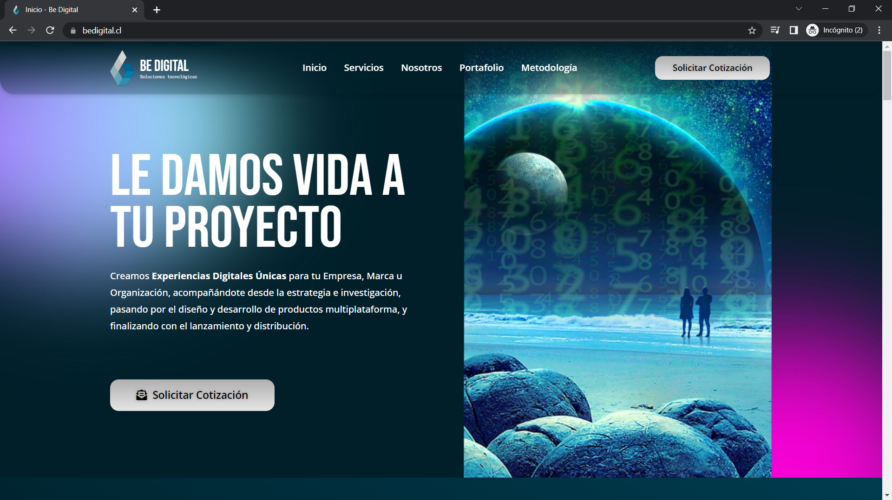

Emprendimiento
Be Digital
Be Digital es un estudio descentralizado que se especializa en la creación de productos y experiencias digitales. La construcción del sitio realmente no fue muy compleja (aunque tiene una interfaz de usuario muy guapa). Actualmente me encargo de dirigir los proyectos y delegar la mayor parte de la ejecución a otros perfiles tech (devs, designers, marketers, etc.).
💻 Tecnologías: HTML5 - CSS3 - WordPress - Elementor
Visitar sitio